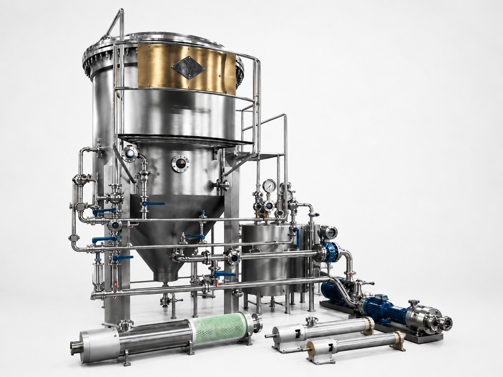

01FILTRATION SYSTEMS
کندل فیلتر
سیستم فیلتراسیون Precoat برای شفافسازی شربت، آبمیوه، ماءالشعیر و سیالات حساس؛ قابل ساخت در مدلهای نیمهاتوماتیک و تماماتوماتیک.
- ظرفیت
- ۴٬۰۰۰—۴۰٬۰۰۰ L/H
- متریال
- AISI 304L / 316L
- قابلیت
- CIP + Backwash